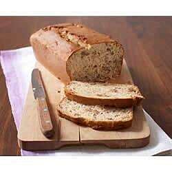

Classic Banana Bread Recipe

This is banana bread recipe is friendly for bigier bakers as it is very easy to make.
This classic banana bread with sour cream bakes up light and moist.
Ingridients
- ¼ cup butter, softened
- 1 cup sugar
- 1 cup mashed fully ripe bananas
- 1 cup breakston's Reduced Fat Sour Cream
- 2 large eggs eggs
- 2 ¼ cups flour
- 1 ½ teaspoons calumet Baking Powder
- ½ teaspoon baking soda
- ½ teaspoon salt
- 1 cup chopped planters Walnuts
Steps
- Heat oven to 350 degrees F. Beat butter and sugar in large bowl with mixer until well blended. Add bananas, sour cream and eggs; mix well. Add combined dry ingredients; mix just until moistened. Stir in nuts.
- Pour into greased and floured 9x5-inch loaf pan
- Bake 1 hour or until toothpick inserted in center comes out clean. Cool 5 minutes; remove from pan to wire rack. Cool completely before slicing to serve. Refrigerate leftovers.